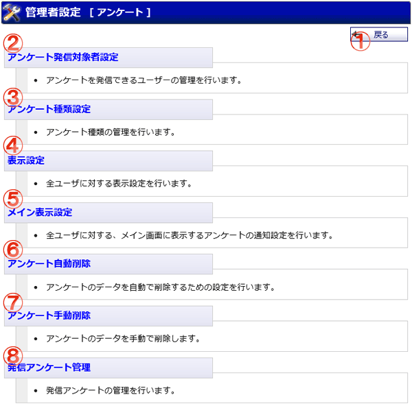

アンケート管理者設定のメニュー画面です。

機能説明
戻るボタン遷移元の画面へ遷移します。 |
アンケート発信対象者設定アンケートを発信できるユーザーの管理を行います。アンケート発信対象者設定画面へ遷移します。 |
|---|---|
アンケート種類設定アンケート種類の管理を行います。アンケート種類設定画面へ遷移します。 |
表示設定全ユーザに対する、1ページに表示するアンケート件数の設定を行います。表示設定画面へ遷移します。 |
メイン表示設定全ユーザに対する、メイン画面に表示する未回答アンケートの通知設定を行います。メイン表示設定画面へ遷移します。 |
アンケート自動削除アンケートのデータを自動で削除するための設定を行います。アンケート自動削除設定画面へ遷移します。 |
アンケート手動削除アンケートのデータを手動で削除します。アンケート手動削除画面へ遷移します。 |
発信アンケート管理発信アンケートの管理を行います。発信アンケート管理画面へ遷移します。 |